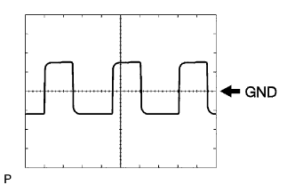
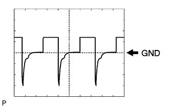
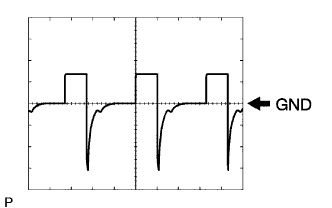
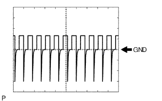
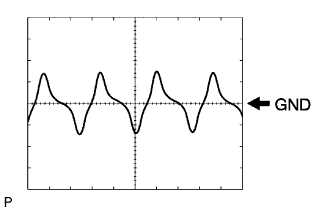
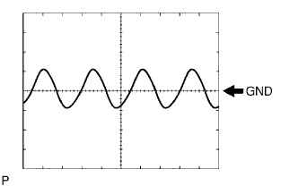
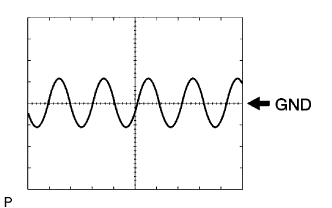

CVT System [Super CVT-i] (K112/K112F) Terminals of ECU |
| Terminal Symbol [Terminal No.] | Input/Output | Item | Measurement Condition | Standard |
|---|---|---|---|---|
| STAR←→E1 [A52←→A104] | Output | Voltage | Engine stopped, IG ON (Other than P, N positions) | 11 to 14V |
| STAR←→E1 [A52←→A104] | Output | Voltage | Cranking (P, N positions) | 11 to 14V (Pulse generation) |
| R←→E1 [A53←→A104] | Input | Voltage | Shift lever R position → other than R position | 11 to 14V→0 to 1.5V |
| N←→E1 [A54←→A104] | Input | Voltage | Shift lever N position → other than N position | 11 to 14V→0 to 1.5V |
| D←→E1 [A56←→A104] | Input | Voltage | Shift lever D position/M position → other than D position/M position | 11 to 14V→0 to 1.5V |
| SL←→E1 [A57←→A104] | Output | Voltage | Shift lever N position → D position | 11 to 14V→0 to 1.5V |
| VCPT←→EPTO [A70←→A94] | Output | Voltage | Engine stopped, IG ON | 4.75 to 5.75V |
| PTO←→EPTO [A71←→A94] | Input | Voltage | Engine idling in P position | 0.8 to 1.2V |
| THO1←→ETHO [A72←→A95] | Input | Voltage | CVT fluid temperature 60 to 120°C | 0.2 to 1.0V |
| P←→E1 [A73←→A104] | Input | Voltage | Shift lever P position → other than P position | 11 to 14V→0 to 1.5V |
| S←→E1 [A74←→A104] | Input | Voltage | Shift lever M position → other than M position | 11 to 14V→0 to 1.5V |
| SLS+←→SLS- [A76←→A75] | Output | Waveform | Engine idling | Waveform 1 |
| DS2←→E1 [A78←→A104] | Output | Waveform | Accelerator pedal ON from constant vehicle speed driving in D position | Waveform 2 |
| DS1←→E1 [A79←→A104] | Output | Waveform | Accelerator pedal ON → OFF while driving in D position | Waveform 3 |
| DSU←→E1 [A80←→A104] | Output | Waveform | Lock-up OFF → ON | Waveform 4 |
| NIN+←→NIN- [A101←→A102] | Input | Waveform | In D range at vehicle speed of approximately 6km/h, engine speed 760rpm | Waveform 5 |
| NT+←→NT- [A126←→A103] | Input | Waveform | At vehicle speed of approximately 12km/h, engine speed 1040rpm | Waveform 6 |
| NOT+←→NOT- [A125←→A124] | Input | Waveform | In D position at vehicle speed of approximately 12km/h, engine speed 1043rpm | Waveform 7 |
| E1 ←→ Body ground [A104] | - | Resistance | Always | Below 1 Ω |
| +B2←→E1 [B1←→A104] | - | Voltage | Engine stopped, IG ON | 11 to 14V |
| +B←→E1 [B2←→A104] | - | Voltage | Engine stopped, IG ON | 11 to 14V |
| +BM←→E1 [B3←→A104] | Input | Voltage | Always | 11 to 14V |
| SFTU←→E1 [B16←→A104] | Input | Voltage | Shift lever M position → shift to "+" | 11 to 14V→0 to 1.5V |
| BATT←→E1 [B20←→A104] | - | Voltage | Always | 11 to 14V |
| STP←→E1 [B36←→A104] | Input | Voltage | Stop light switch ON (brake pedal depressed) → OFF (brake pedal released) | 11 to 14V→0 to 1.5V |
| CANH←→CANL [B41←→B49] | - | Resistance | IG OFF | 54 to 67Ω |
| MREL←→E1 [B44←→A104] | Output | Voltage | Engine stopped, IG ON → IG OFF (3 seconds or more after OFF) | 11 to 14V→0 to 1.5V |
| SFTD←→E1 [B51←→A104] | Input | Voltage | Shift lever M position → shift to "-" | 11 to 14V→0 to 1.5V |
| STA←→E1 [B48←→A104] | Input | Voltage | During cranking | 9V or more |
 |
Waveform 1 (Solenoid [SLS])
| Item | Description |
|---|---|
| Measurement Terminal | SLS+←→SLS- |
| Tool Setting | 5V/DIV、1ms/DIV |
| Measurement Condition | Engine idling |
 |
Waveform 2 (Solenoid [DS2])
| Item | Description |
|---|---|
| Measurement Terminal | DS2←→E1 |
| Tool Setting | 10V/DIV、5ms/DIV |
| Measurement Condition | Accelerator pedal ON from constant vehicle speed driving in D range |
 |
Waveform 3 (Solenoid [DS1])
| Item | Description |
|---|---|
| Measurement Terminal | DS1←→E1 |
| Tool Setting | 10V/DIV、5ms/DIV |
| Measurement Condition | Accelerator pedal ON → OFF while driving in D range |
 |
Waveform 4 (Solenoid [DSU])
| Item | Description |
|---|---|
| Measurement Terminal | DSU←→E1 |
| Tool Setting | 10V/DIV、20ms/DIV |
| Measurement Condition | Lock-up OFF → ON |
 |
Waveform 5 (Revolution Sensor [NIN])
| Item | Description |
|---|---|
| Measurement Terminal | NIN+←→NIN- |
| Tool Setting | 1V/DIV、2ms/DIV |
| Measurement Condition | In D range at vehicle speed of approximately 6km/h, engine speed 760r/min |
 |
Waveform 6 (Revolution Sensor [NT])
| Item | Description |
|---|---|
| Measurement Terminal | NT+←→NT- |
| Tool Setting | 2V/DIV、1ms/DIV |
| Measurement Condition | At vehicle speed of approximately 12km/h, engine speed 1040r/min |
 |
Waveform 7 (Revolution Sensor [NOUT])
| Item | Description |
|---|---|
| Measurement Terminal | NOT+←→NOT- |
| Tool Setting | 1V/DIV、2ms/DIV |
| Measurement Condition | In D range at vehicle speed of approximately 12km/h, engine speed 1043r/min |